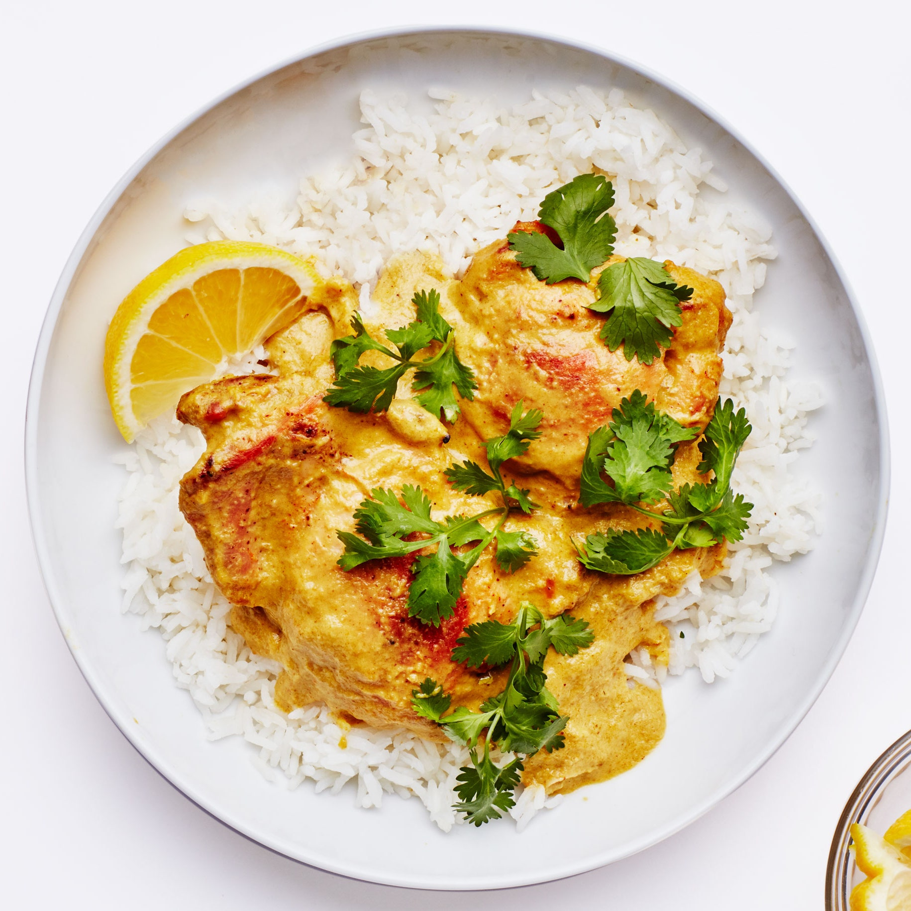

Kuku Paka

Kuku paka, an East African-Indian dish that’s traditionally made with charcoal-grilled chicken in a spiced coconut milk sauce and served over rice, is comforting, sweet, creamy, and well-balanced.
Any cut of chicken can be used: I like boneless thighs here for the sake of ease and flavor, but any mix of breasts, tenders, or drumsticks can be used, provided they’ve been cut into similar sizes. Because the chicken is cooked separately from the curry base, you also can substitute it with any hearty vegetable to make this dish suitable for a vegetarian diet. For a plant-based diet, skip the addition of heavy cream or substitute it with a creamy barista-style nondairy milk or additional coconut milk. Jalapeños will work in place of the Thai chiles, though you’ll want to adjust the amount depending on your spice tolerance—my rule of thumb is one medium jalapeño for every two Thai chiles. And a pinch of cayenne pepper will work in place of the Kashmiri chile powder.
Ingredients
- 3 garlic cloves
- 2 lemons
- 2 tsp. salt
- 1 tsp. Kashmiri chile powder
- 8 large skinless, B O N E L E S S chicken thighs
- 1 medium onion
- 1 plum tomato
- 2 green Thai chiles
- 1/4 cup coriander leaves and stems
- 2 Tbsp. extra-virgin olive oil
- 1/4 tsp. ground coriander
- 1/4 tsp. ground cumin
- 1/8 tsp. ground tumeric
- 1 tin coconut milk
Preparation
- Finely grate 3 garlic cloves into a large bowl with a Microplane. Cut 1 lemon in half and squeeze juice through your hand or a fine-mesh sieve into bowl; discard seeds. Mix in 1 tsp. salt and 1 tsp. Kashmiri chile powder. Add chicken thighs and toss to evenly coat. Cover bowl and let sit at room temperature 30 minutes.
- Meanwhile, make the curry base. Coarsely chop 1 medium onion, 1 plum tomato, 2 green Thai chiles, and ¼ cup coriander leaves and stems. Transfer to a blender or food processor and blend or process until smooth.
- Heat broiler. Heat 2 Tbsp. extra-virgin olive oil in a high-sided skillet or large pot over medium. Add ¼ tsp. ground coriander, ¼ tsp. ground cumin, and ⅛ tsp. ground turmeric. Cook, stirring, until fragrant, about 1 minute. Pour in purée and add 1 tsp. salt. Stir to combine and cook, stirring occasionally, until raw onion smell subsides and curry is paste-like in consistency, 15–20 minutes.
- Arrange chicken on a foil-lined rimmed baking sheet and broil until cooked through, charred in spots, and a thermometer inserted into the thickest parts registers 165°, 17–20 minutes.
- While the chicken is cooking, shake tin of coconut milk to ensure coconut cream is incorporated, then add coconut milk to curry and stir well to combine. Curry should be pale yellow. Bring to a gentle simmer and cook until warm and slightly thickened, 5–10 minutes.
- Once chicken is finished, add chicken and any juices accumulated on baking sheet to curry and reduce heat to low; mix well to combine. Stirring constantly to prevent curry from breaking, dribble in ¼ cup heavy cream. Taste and season with more salt if needed.
- Cut remaining 1 lemon into wedges. Serve kuku paka with basmati rice and/or some crusty bread and lemon wedges for squeezing over. Top with additional coriander to taste.